「区块链周报第二期」纳斯达克下场RWA，CEX自建链百花齐放[09/08-09/14]
BTC/ETH/ADA 价格
BTC 110500-116500 7000点的缓慢的单边上涨行情
三个代币的价格走势几乎和比特币一致，都是处于一个慢慢涨的状态，等你后面发现他在涨的时候，他已经悄悄涨了好多了
BTCUSD - TradingView
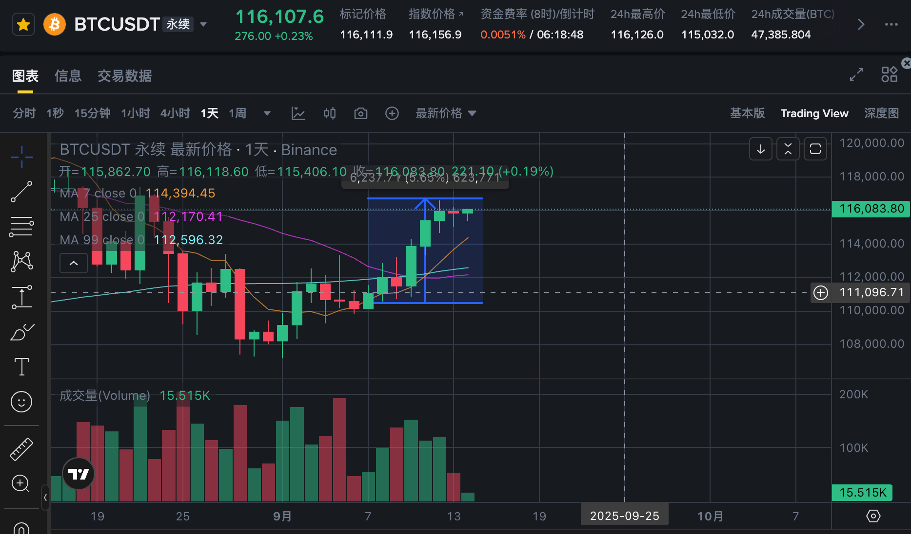
ETH 4270-4700 500点的缓慢的单边上涨行情
ETHUSD - TradingView
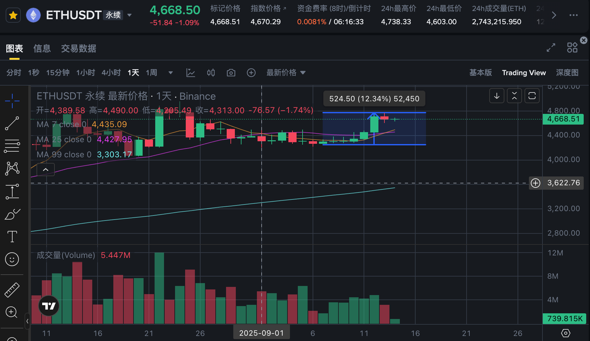
ADA 0.83-0.95 0.1的缓慢的单边上涨行情
ETHUSD - TradingView
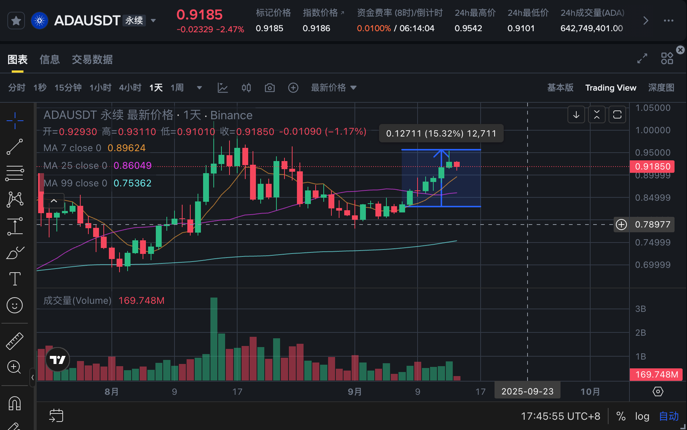
不知不觉中山寨季已经蓄势待发了
纳斯达克正力争推出代币化证券交易
RWA（Real World Assets，现实世界资产）是指把现实中的资产（如房产、债券、商品、艺术品等）以数字化或代币化的形式映射到区块链上的过程和资产类别。
新闻：纳斯达克正力争推出代币化证券交易
相关分析：
之前就有小平台在做美股代币化的事情，现在纳斯达克准备自己下场做了，RWA趋势已经很明显了，如果还在装作看不到，那该怎么在投资市场盈利呢？
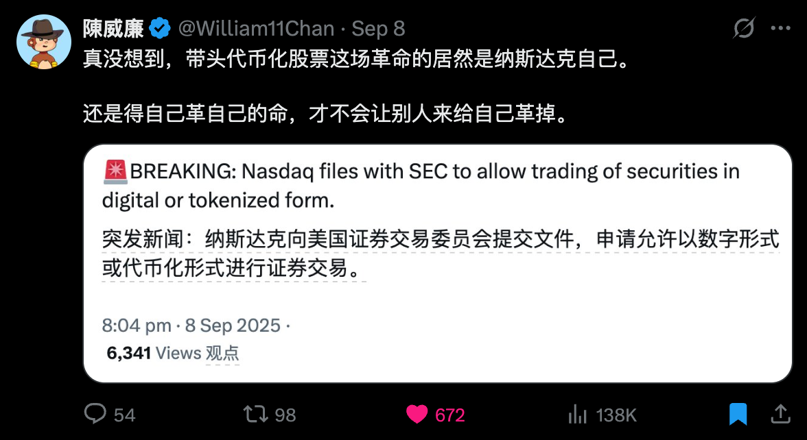
打不过就加入？纳斯达克高管亲述为何主动「拥抱」代币化
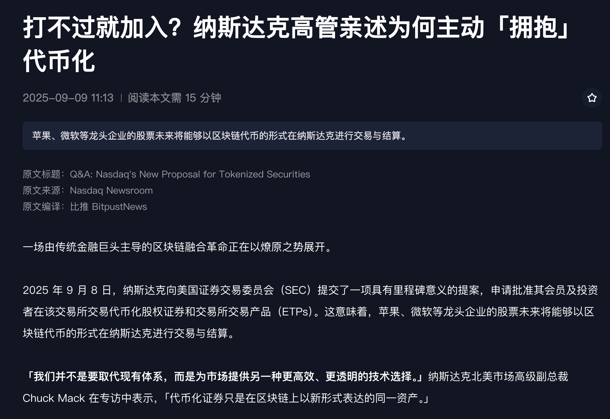
Aster即将TGE，币安站台能成为DEX的龙二吗？
空投查询：空投查询
Aster 邀请链接
Aster：8.8%代币将于TGE解锁并分配，部分协议收入将用于回购 https://www.theblockbeats.info/flash/311205
Aster下一时代开启：积分空投第二阶段上线，TGE倒计时开始。https://www.theblockbeats.info/news/59559
支持的功能还挺多的，这里不多讲了
大家自己探索吧
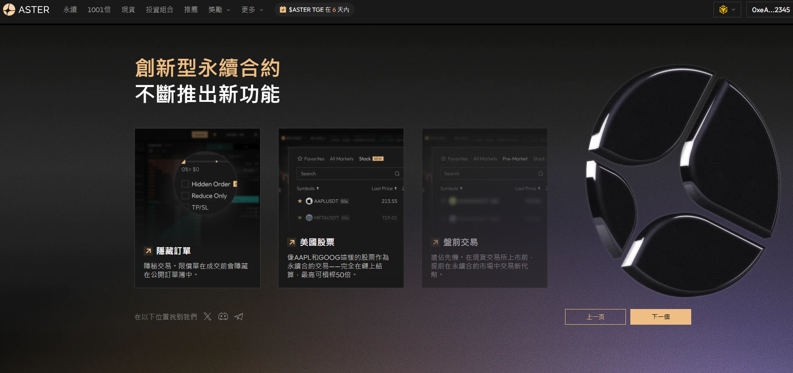
项目目前我看其实还是早期阶段，不像Hyperliquid生态已经很完善了。比如说没有社区类的工具查看持仓等，后续发展起来如果有炒作的话估计会成为龙二，就是像之前内幕哥，James那样的巨鲸开单炒作。
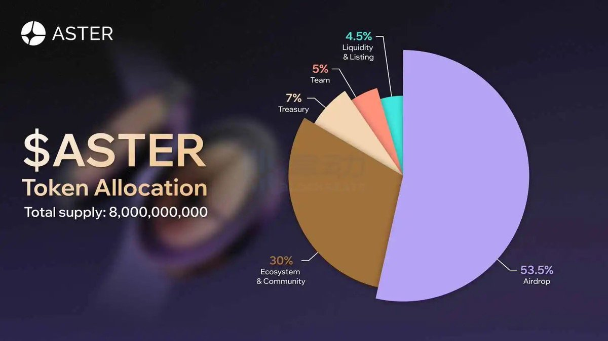
cz与Aster的互动还挺多的
CZ与Aster的互动
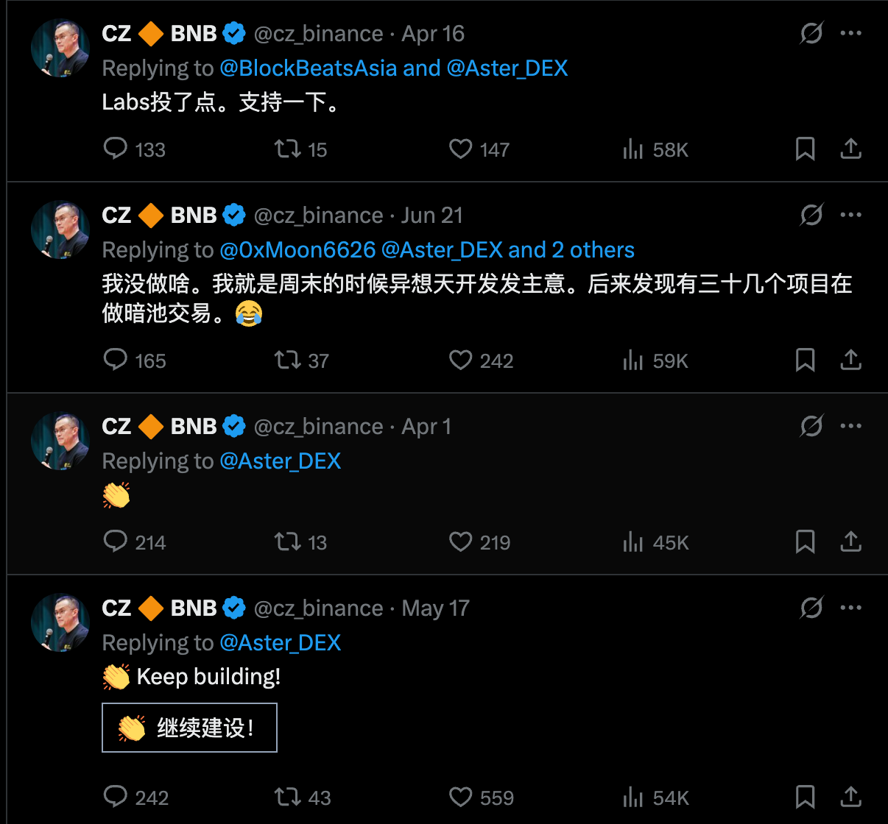
CEX自建链百花齐放
币安的BSC链，CoinBase的Base链，OKX的Xlayer链，现在upbit也在开发自己的链
包括Teather和Circle也在开发自己的链，这些链其实就是web3里面的基础建设，俗话说要想富先修路，发行自己的链就可以理解为修路，究竟结果如何，没有人可以知道，我们一起拭目以待吧。
Upbit 的公链，基于以太坊、Binance 的公链，基于以太坊
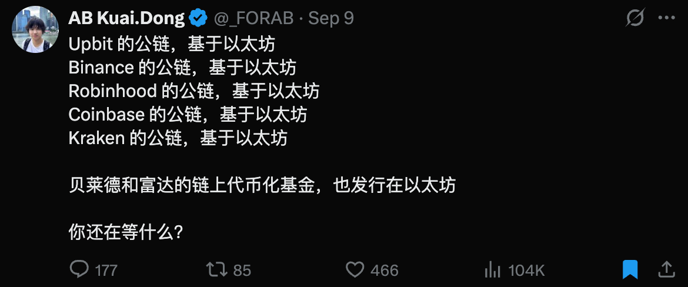
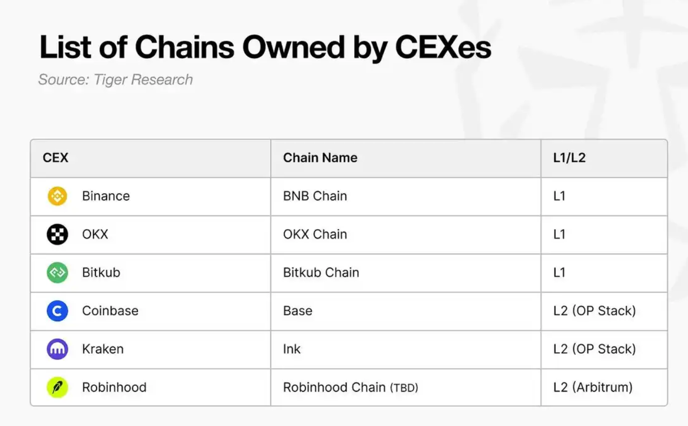
韩国最大交易平台Upbit将推出「GIWA」区块链
Upbit：GIWA将是以太坊L2网络，已上线测试网
Upbit自己的区块链Giwa，有哪些韩国本土优势？
谷歌：我们为什么要做一条自己的区块链GCUL
Hyperliquid 开启 USDH 竞拍提案
传出消息之后，hype在这一周迎来了20%左右的涨幅，对于稳定币的发行我不是行家，我所知道的就是hype不仅仅是一个dex，不仅仅是一个代币，而是一个生态，大家去深入了解下就可以知道了，甚至可以质押hype然后自建交易所【我理解的应该是这样，可能有错，大家自行研究】
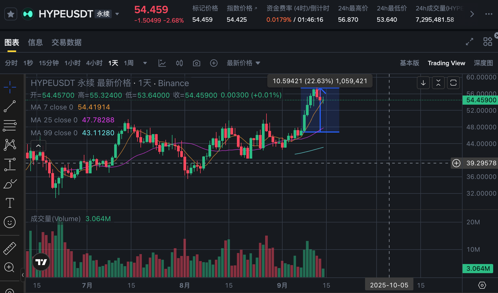
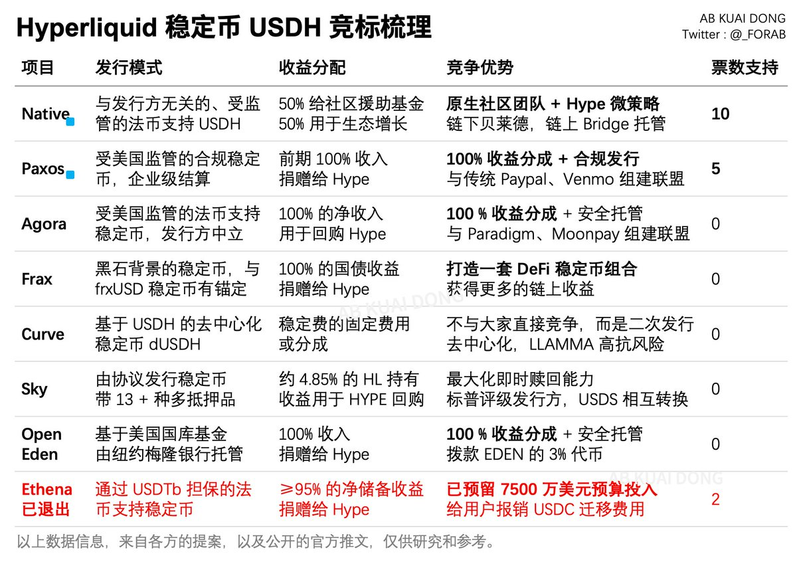
今天是 Hyperliquid 稳定币 USDH，各家截止竞标提案的日子，目前有 10 多家，公开宣布要参与此次竞标。
才经历 2 天，Hyperliquid 的稳定币 USDH 发行权，竞标基本就剩两家在打架了，分别是 Native Markets 和 Paxos + Paypal 联盟。
比特币基本面历史最好
比特币作为最成熟的 PoW 公链，目前全网算力创历史新高，网络安全性不断增强，叠加相对分散的算力分布，可以说其基本面处于历史最佳状态。
比特币算力与价格相关性
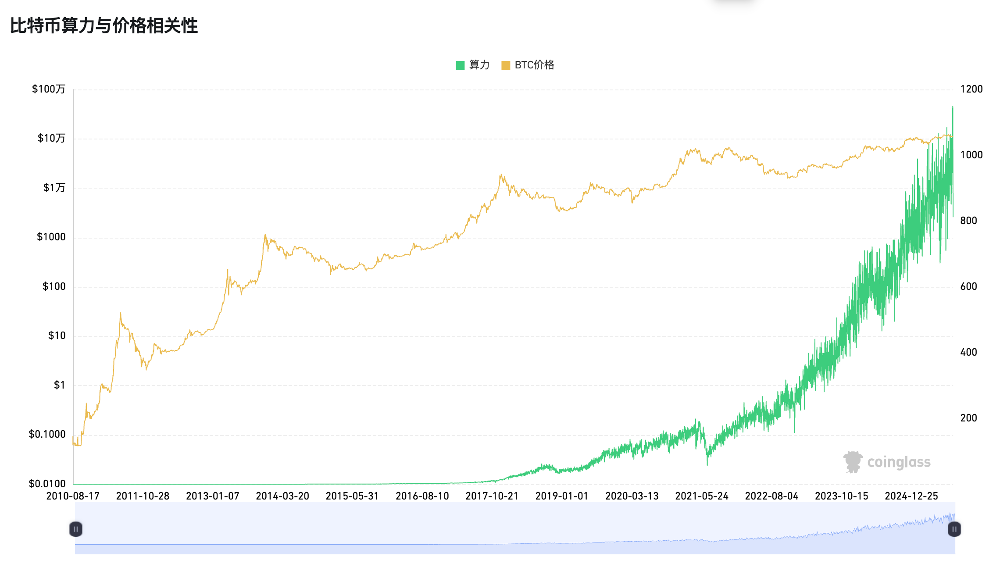
比特币矿池算力排名
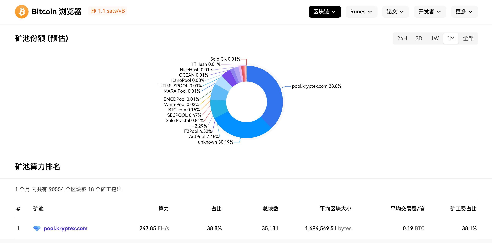
然后再拓展一下，最近看到一篇文章是以太坊的pow转pos的见解，个人感觉很有趣，所以分享一下。
大家仁者见仁，智者见智。也可以在评论区分享出你的看法。
当初以太坊一开始走pow的道路，最后转pos是一个“无心插柳”的安排...
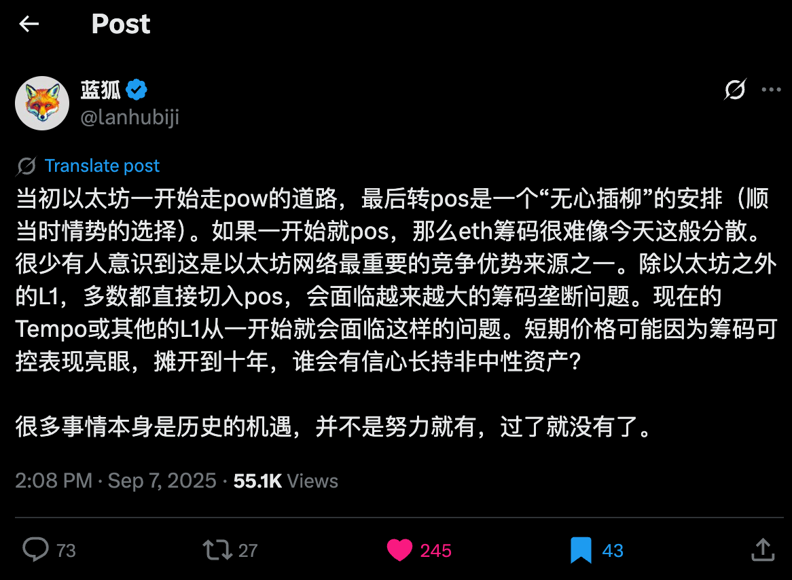
牛市到顶了吗？
https://www.coinglass.com/zh/bull-market-peak-signals
牛市逃顶信号清单
更新时间: 2025-09-13 14:10
指标命中率 : 1/30
虽然有滞后但现在一项都没有 可以借鉴指标 比特币价格与m2货币供应量
比特币 vs 全球 M2 货币供应增长
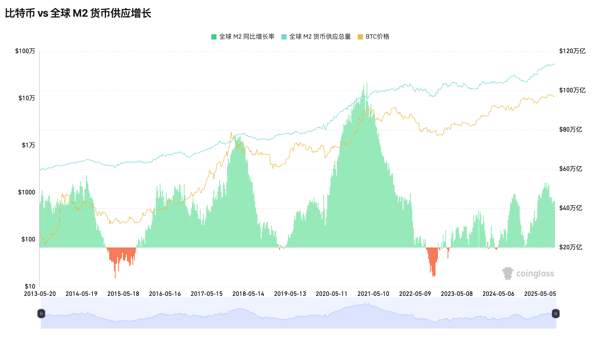
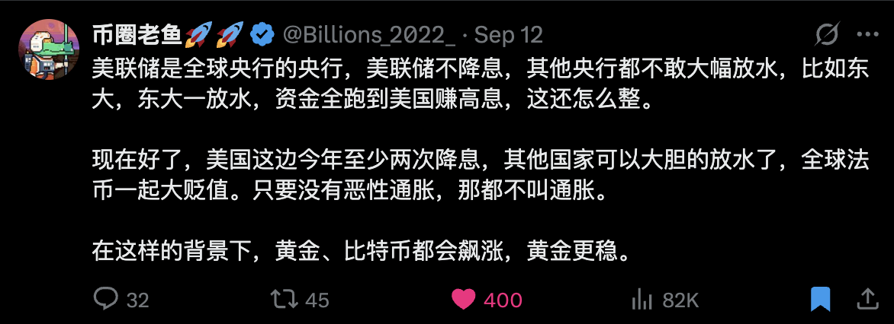
美联储是全球央行的央行，美联储不降息，其他央行都不敢大幅放水，比如东大，东大一放水，资金全跑到美国赚高息，这还怎么整。
其他资讯
PUMP新高，匿名联创谈背后原因
「WLFI提议将100%流动性费用回购并销毁WLFI」提案目前支持率达99.72%
亏钱的meme币玩家们，正疯狂涌进预测市场
下周重要事件
北京时间 2025-09-18 凌晨两点 :美国至9月17日美联储利率决定 [FOMC会议]